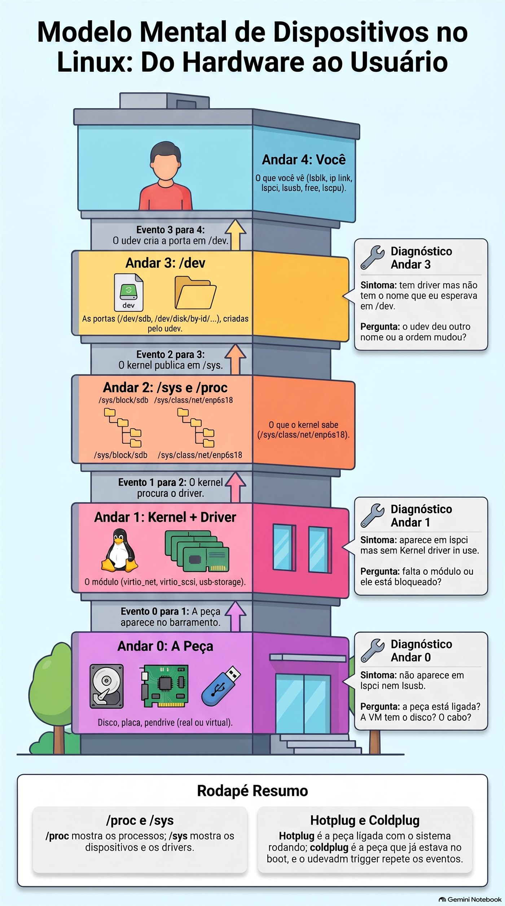
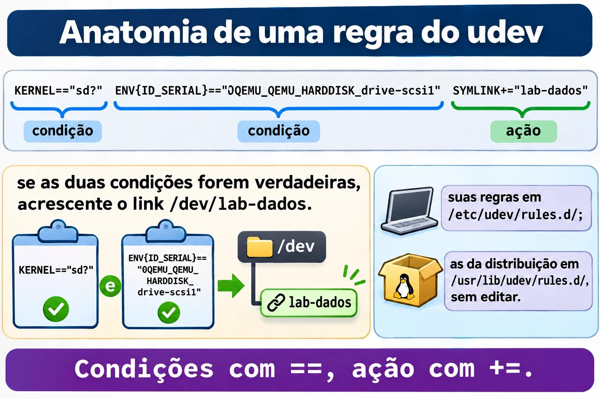
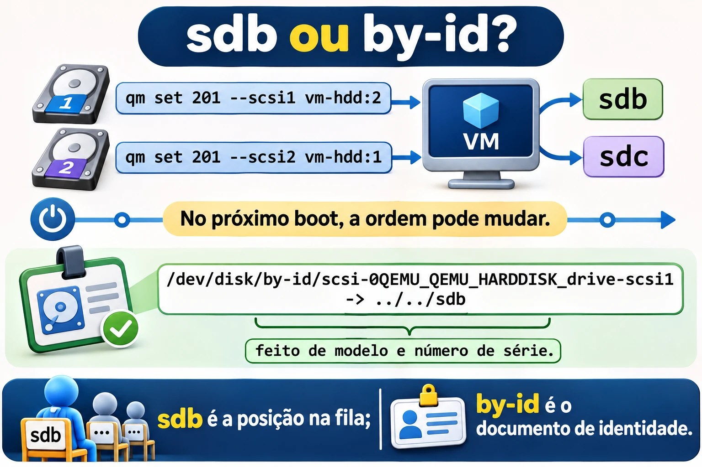
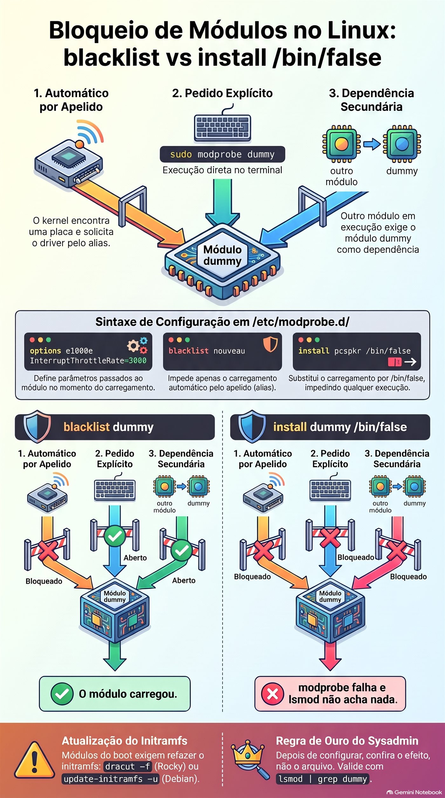

Aula 2.2 · Hardware e dispositivos
Segunda aula do Módulo 2. O cliente liga: "colocamos um disco novo no servidor e ele não aparece", ou "qual dessas duas placas de rede é a da internet?", ou ainda "o servidor está lento, falta memória?". Nos três casos, a primeira coisa a fazer não é configurar nada, e sim perguntar ao kernel o que ele está vendo. Hoje você aprende a fazer esse inventário em dois minutos, entende como uma peça física vira um arquivo em /dev, liga um disco com a VM rodando e assiste ao kernel recebê-lo ao vivo. No fim, você dá ao disco um nome que não muda e bloqueia um driver do jeito certo, que não é o jeito que quase todo mundo usa.
| Ficha | Aula 2.2 |
|---|---|
| Módulo | M2 · Sistema, usuários e permissões, aula 2 de 8 |
| Quando | Semana 4 |
| Ao final você consegue | Fazer o inventário de CPU, memória, discos, placas e USB de qualquer servidor; dizer qual driver cuida de cada placa; acompanhar ao vivo a chegada de um dispositivo; explicar o caminho peça → kernel → /sys → udev → /dev; escolher um nome de disco que não muda entre boots; escrever uma regra do udev; carregar, remover e bloquear de verdade um módulo do kernel |
| Pré-requisitos | Aula 2.1 (VM × container, systemd-detect-virt); Aulas 1.5 e 1.6 (grep e pipes) |
| Tempo | Cerca de 2h |
| Snapshots | m2a2-inicio e m2a2-fim nas duas VMs |
1 · Aquecimento
Três perguntas, de cabeça. Escreva as respostas; o Gabarito confere no fim.
- Na Aula 0.1, a placa de rede das VMs se chamava
enp6s18. Palpite: por que um nome tão estranho, e nãoeth0, como nos tutoriais antigos? - No Linux, "tudo é arquivo". Palpite: se o disco é um arquivo, em que pasta ele está, e como se chama?
- No Windows, onde você olha qual driver uma placa está usando? Palpite: qual é o equivalente no Linux, um programa ou uma pasta?
2 · Por que importa
Inventário é o trabalho mais subestimado do sysadmin. Num atendimento, as primeiras perguntas são sempre as mesmas: quantos processadores, quanta memória sobra, que discos existem e se são SSD, qual placa de rede está ligada no switch. Quem responde em dois minutos, pelo SSH, resolve antes de alguém precisar ir ao datacenter.
E há o erro que derruba servidor: o disco que muda de nome. Hoje o disco de backup é /dev/sdb. Alguém pluga um pendrive, ou troca uma controladora, ou o kernel simplesmente encontra os discos em outra ordem no boot, e o disco de backup vira /dev/sdc. O script de backup, que gravava em /dev/sdb, agora grava em outro disco. Ou o /etc/fstab não acha o disco e o servidor para no boot pedindo a senha de root no console. Nomes como sdb são posições numa fila, não identidades. A identidade é o número de série, e hoje você aprende a usá-la.
Por fim, drivers. Uma placa que "não funciona" quase sempre é um módulo que não carregou, ou que alguém bloqueou. Saber carregar, remover e bloquear um módulo é o que separa "vou reinstalar" de "resolvi em cinco minutos".
3 · Modelo mental
Uma peça só existe para você depois de atravessar quatro andares. Quando algo "não aparece", você sobe os andares, um por um, até achar onde parou.
4. você lsblk, ip link, lspci, lsusb, free, lscpu "o que eu vejo"
▲
3. /dev /dev/sdb, /dev/disk/by-id/... as portas, criadas pelo udev
▲
2. /sys e /proc /sys/block/sdb, /sys/class/net/enp6s18 o que o kernel sabe, em arquivos
▲
1. kernel+driver o módulo (virtio_net, virtio_scsi, usb-storage) quem fala com a peça
▲
0. a peça disco, placa, pendrive (real ou virtual)Leia de baixo para cima. A peça aparece no barramento (PCI, USB, SCSI). O kernel procura um driver que saiba falar com ela; no Linux, quase todo driver é um módulo, um pedaço do kernel que se carrega e descarrega com ele ligado. O kernel publica o que encontrou em /sys, uma pasta de arquivos que não existem em disco. O udev, um serviço do systemd, recebe o aviso "chegou uma peça", lê os dados dela e cria a porta em /dev, junto com nomes extras e estáveis. Só então os programas a enxergam.
Os três diagnósticos que resolvem 90% dos casos:
| Sintoma | Andar | Pergunta |
|---|---|---|
Não aparece em lspci nem em lsusb | 0 | A peça está ligada? A VM tem o disco? O cabo? |
Aparece em lspci, mas sem Kernel driver in use | 1 | Falta o módulo, ou ele está bloqueado |
Tem driver, mas não tem o nome que eu esperava em /dev | 3 | O udev deu outro nome, ou a ordem mudou |


4 · Conceito em camadas
Essencial
As peças. O que o dia a dia espera que você reconheça:
| Peça | O que faz | Como o Linux mostra |
|---|---|---|
| Processador (CPU) | Executa os programas; tem núcleos (cores) e, às vezes, dois fios por núcleo (threads) | lscpu, nproc, /proc/cpuinfo |
| Memória (RAM) | Guarda o que está em uso; some ao desligar | free -h, /proc/meminfo |
| Swap | Uma área do disco usada como memória de reserva, muito mais lenta | swapon --show, free -h |
| Disco HDD | Disco que gira; barato, grande e lento | lsblk, coluna ROTA = 1 |
| Disco SSD e NVMe | Sem partes móveis; o NVMe vai direto no barramento PCIe e é o mais rápido | ROTA = 0; o NVMe se chama nvme0n1 |
| Placa de rede | Liga o servidor ao switch | ip -br link, lspci |
| Periféricos USB | Pendrive, teclado, token, nobreak | lsusb |
| Firmware (BIOS ou UEFI) | O programa da placa-mãe que liga tudo e chama o carregador do sistema | ls /sys/firmware/efi existe só em UEFI (Módulo 4) |
Os nomes dos discos. O nome diz como o disco está ligado, não o que ele é:
| Nome | Quem é |
|---|---|
/dev/sda, /dev/sdb... | Discos SATA, SAS, USB e SCSI, inclusive o SCSI virtual do Proxmox |
/dev/sda1, /dev/sda2 | As partições do sda |
/dev/nvme0n1, /dev/nvme0n1p1 | O primeiro disco NVMe e a primeira partição dele (repare no p) |
/dev/vda, /dev/vdb | Disco virtio-blk numa VM |
/dev/mmcblk0 | Cartão SD e memória eMMC, como num Raspberry Pi |
/dev/sr0 | O leitor de CD/DVD, inclusive o virtual |
A letra (a, b, c) é dada na ordem em que o kernel encontra os discos. Não é fixa.
O inventário em seis comandos. Decore esta sequência; ela abre todo atendimento:
lscpu | head -20 # processador: modelo, núcleos, virtualização
free -h # memória: olhe a coluna "available"
lsblk # discos, partições e onde estão montados
lspci # placas no barramento PCI
lsusb # o que está no USB
ip -br link # placas de rede e se o cabo está "UP"Intermediário
/proc e /sys, as duas janelas do kernel. Nenhum dos dois existe no disco; o kernel inventa o conteúdo na hora em que você lê.
/proc | /sys | |
|---|---|---|
| Nasceu para | Mostrar os processos (/proc/1234) | Mostrar os dispositivos e os drivers |
| Organização | Antiga e misturada: processos, memória, CPU, configurações | Uma árvore: barramento → dispositivo → driver |
| Exemplos | /proc/cpuinfo, /proc/meminfo, /proc/partitions, /proc/modules | /sys/block/sda/size, /sys/class/net/enp6s18/address, /sys/module/ |
| Quem usa | Você, o free, o top, o ps | O udev, o lsblk, o ip |
Os módulos do kernel. O driver de uma placa quase sempre é um arquivo .ko em /lib/modules/$(uname -r)/. Os comandos:
| Comando | O que faz |
|---|---|
lsmod | Lista os módulos carregados e quem depende de quem (lê /proc/modules) |
modinfo nome | Mostra o arquivo, a descrição, os parâmetros e as dependências do módulo |
sudo modprobe nome | Carrega o módulo e as dependências dele |
sudo modprobe -r nome | Remove o módulo, se ninguém estiver usando |
lspci -k | Mostra, para cada placa, o driver em uso (Kernel driver in use) e os que serviriam (Kernel modules) |
Existem também insmod e rmmod, que carregam e removem um arquivo, sem resolver dependências. Vale reconhecer; no dia a dia, use modprobe.
Configurar módulos. Arquivos .conf em /etc/modprobe.d/. Três linhas que você vai usar:
options e1000e InterruptThrottleRate=3000 # parâmetro passado ao carregar
blacklist nouveau # não carregar AUTOMATICAMENTE
install pcspkr /bin/false # nunca carregar, nem se alguém pedirA diferença entre blacklist e install ... /bin/false é a armadilha da aula. Você vai cair nela no lab, de propósito.
O udev. Quando chega uma peça, o kernel manda um evento (add); quando sai, outro (remove). O systemd-udevd recebe o evento, junta as informações da peça (fabricante, modelo, número de série) e aplica regras:
/usr/lib/udev/rules.d/: as regras da distribuição. Não edite: a próxima atualização sobrescreve./etc/udev/rules.d/: as suas. Um arquivo com o mesmo nome de um da distribuição o substitui.
As regras criam os nomes estáveis que você deve usar em scripts e configurações:
| Pasta | Nome baseado em | Muda se... |
|---|---|---|
/dev/disk/by-id/ | Modelo e número de série do disco | Trocar o disco |
/dev/disk/by-uuid/ | O UUID do sistema de arquivos | Formatar de novo (Módulo 9) |
/dev/disk/by-path/ | O caminho físico: controladora e porta | Mudar o cabo de porta |
/dev/disk/by-label/ | O rótulo que você deu ao formatar | Mudar o rótulo |
O nome da placa de rede. O enp6s18 é um nome previsível, dado pelo udev a partir da posição física: en = Ethernet, p6 = barramento PCI 6, s18 = slot 18. O antigo eth0 era dado na ordem de descoberta, como o sdb, e com duas placas o eth0 de hoje podia ser o eth1 de amanhã. Num servidor físico você vai ver também eno1 (placa onboard, numerada pelo firmware) e ens1f0 (placa em slot, porta 0).
Hotplug e coldplug. Peça ligada com o sistema rodando é hotplug: o kernel manda o evento na hora. Peça que já estava lá no boot é coldplug: o udev, ao iniciar, pede ao kernel que repita os eventos de tudo o que já existe (udevadm trigger), e trata tudo do mesmo jeito.
Ponte Windows
| No Windows | No Linux | O que muda |
|---|---|---|
| Gerenciador de Dispositivos | lspci -k, lsusb, lsblk | Três comandos em vez de uma janela, e funcionam pelo SSH |
Driver .sys instalado pelo fabricante | Módulo .ko, quase sempre já no kernel | Raramente se instala driver no Linux: ele vem com o kernel |
| "Desabilitar dispositivo" | install modulo /bin/false em /etc/modprobe.d/ | Bloqueia o driver, não a peça |
Letra de unidade D: | /dev/sdb e o ponto de montagem | A letra do Windows é o lugar onde se monta; o sdb é a peça |
| Disco > propriedades > número de série | /dev/disk/by-id/ e lsblk -o +SERIAL | |
| Gerenciador de Tarefas > Desempenho | lscpu, free -h, top | |
msinfo32 | sudo dmidecode, hostnamectl | O dmidecode lê as tabelas do firmware: fabricante, modelo, série do servidor |
Avançado
lspci -k mostra dois andares. Numa VM, a placa de rede aparece como Virtio network device com Kernel driver in use: virtio-pci. Mas o módulo de rede é o virtio_net. Não é contradição: o virtio-pci cuida da conversa com o barramento PCI; em cima dele, o virtio_net cuida da rede. O link /sys/class/net/enp6s18/device/driver aponta para o de cima.
udev e D-Bus. O udev cria os arquivos em /dev. Programas que precisam reagir a uma peça nova, como o ambiente gráfico que abre uma janela quando você pluga um pendrive, não leem o udev diretamente: escutam o D-Bus, o barramento de mensagens do sistema, onde serviços como o udisks2 avisam "chegou um disco". Em servidor, quase não se usa; basta saber o papel de cada um.
Regras do udev. Uma regra é uma linha de pares chave-operador-valor. Chaves com == ou != são condições; chaves com =, += ou := são ações:
KERNEL=="sd?", ENV{ID_SERIAL}=="0QEMU_QEMU_HARDDISK_drive-scsi1", SYMLINK+="lab-dados"
└─ condição ─┘ └──────────────── condição ─────────────────────┘ └──── ação ─────────┘Se todas as condições forem verdadeiras, as ações acontecem. O udevadm info mostra as variáveis que você pode usar, e o udevadm monitor mostra os eventos ao vivo.
dmesg e journalctl -k. As mensagens do kernel ficam num buffer na memória que o dmesg lê; o journal também as guarda, com data, e journalctl -k mostra só elas. No Debian, ler o buffer exige root (kernel.dmesg_restrict = 1). Use sudo nas duas distribuições e não pense mais nisso.


== e uma ação com +=.5 · Rocky × Debian
| O quê | Rocky 9 | Debian 13 |
|---|---|---|
lspci e lsusb | Pacotes pciutils e usbutils; podem faltar na instalação mínima | Os mesmos pacotes; podem faltar na instalação mínima |
dmesg sem sudo | Funciona | Bloqueado (dmesg_restrict = 1) |
journalctl -k sem sudo | Só para quem está no grupo wheel ou systemd-journal | Só para quem está no grupo adm ou systemd-journal |
| Módulos | /lib/modules/$(uname -r)/ | /lib/modules/$(uname -r)/ |
| Regras do udev da distribuição | /usr/lib/udev/rules.d/ | /usr/lib/udev/rules.d/ |
| Validar uma regra do udev | udevadm test (o systemd do Rocky 9 ainda não tem verify) | udevadm verify arquivo.rules |
| Primeiro disco das VMs do lab | sda, ou vda se a VM usa virtio-blk | sda, ou vda se a VM usa virtio-blk |
6 · Lab guiado
O roteiro: você faz o inventário das duas VMs como faria num cliente novo, descobre qual driver cuida de cada placa, liga um disco com a VM rodando e assiste à chegada dele, dá ao disco um nome que não muda e termina mexendo em módulos do kernel. O disco que você vai criar fica nas VMs: ele é o material do Módulo 9.
Passo 1 · Snapshot e ferramentas
No nó Proxmox:
qm snapshot 201 m2a2-inicio
qm snapshot 202 m2a2-inicioNas VMs, garanta o lspci e o lsusb:
sudo dnf install -y pciutils usbutils # rocky-lab
sudo apt install -y pciutils usbutils # debian-labPasso 2 · O inventário em dois minutos
Na rocky-lab:
lscpu | grep -E '^(Model name|CPU\(s\)|Thread|Core|Socket|Hypervisor|Virtualization)'
nproc
free -h
sudo swapon --show
lsblk -o NAME,SIZE,TYPE,ROTA,MOUNTPOINTSO que ler em cada um:
- No
lscpu, a linhaHypervisor vendor: KVMconfirma o que você viu na Aula 2.1. OCPU(s)é o número de processadores que a VM recebeu, e é o mesmo donproc. - No
free -h, olhe a colunaavailable, não afree. O Linux usa a memória sobrando como cache de disco; a colunafreeparece baixa, e isso é bom. Aavailableé o que os programas ainda podem usar. - No
lsblk, o Rocky mostra o disco, as partições e os volumes LVM (rl-root,rl-swap) que o instalador criou. A colunaROTAdiz1para disco que gira. Numa VM, o Proxmox costuma dizer1mesmo com SSD por baixo, a menos que a opçãossd=1esteja ligada no disco. O sistema só sabe o que o hardware conta a ele.
Agora as placas:
lspci
lsusb
ip -br linkO lspci lista as placas virtuais do QEMU: a controladora SCSI e a placa de rede, ambas Virtio, mais as pontes PCI. O lsusb mostra os barramentos USB e, provavelmente, um QEMU USB Tablet: o mouse do console do Proxmox. O ip -br link mostra o lo e o enp6s18, com UP.
Faça o mesmo na debian-lab. Anote as diferenças: o tamanho da memória, o layout do disco (o Debian costuma usar partições simples, sem LVM) e mais nada. As peças são as mesmas.
Passo 3 · Quem dirige cada placa
Na rocky-lab:
lspci -k | grep -A3 -i -E 'ethernet|scsi'
readlink /sys/class/net/enp6s18/device/driver
lsmod | grep -E '^virtio|^Module'
sudo modinfo virtio_net | grep -E '^(filename|description|depends)'O lspci -k mostra Kernel driver in use: virtio-pci nas duas placas. O readlink responde com um caminho que termina em virtio_net. Os dois estão certos: o virtio-pci conversa com o barramento, e o virtio_net faz a rede por cima dele (seção 4, Avançado). O lsmod mostra os módulos carregados e, na coluna Used by, quem depende de cada um. O modinfo mostra onde está o arquivo .ko.
Agora suba os andares do modelo mental para a placa de rede, de baixo para cima:
lspci | grep -i ethernet # andar 0: a peça existe
ls /sys/class/net/enp6s18/ # andar 2: o kernel publicou
cat /sys/class/net/enp6s18/address # o MAC, lido direto do kernel
cat /sys/class/net/enp6s18/operstate # up ou down
ip -br link show enp6s18 # andar 4: o que você vêO ip não inventa nada: ele lê o que está em /sys. É por isso que, quando um comando "mente", o primeiro lugar onde você confere é /sys.
Passo 4 · Um disco novo, com a VM ligada
Prepare duas janelas de SSH na rocky-lab. Na primeira, fotografe os discos e deixe o monitor do udev ouvindo:
lsblk -d -o NAME,SIZE,SERIAL > ~/discos-antes.txt
cat ~/discos-antes.txt
sudo udevadm monitor --kernel --udev --subsystem-match=blockNa segunda, deixe o kernel falando:
sudo journalctl -k -fAgora, no nó Proxmox, crie um disco de 2 GB e ligue-o na VM. O vm-hdd é o storage Ceph da aula 0.1; se o seu tiver outro nome, pvesm status mostra:
qm set 201 --scsi1 vm-hdd:2,discard=on,iothread=1,ssd=1Olhe as duas janelas. No journalctl, o kernel anuncia o disco: sd ... [sdb] ... (2.15 GB/2.00 GiB), e a linha Attached SCSI disk. No monitor, chegam pares de linhas: KERNEL[...] add (o kernel avisou) e logo depois UDEV [...] add (o udev terminou de criar as portas). É o modelo mental acontecendo, andar por andar, em menos de um segundo.
Pare o monitor e o journalctl com Ctrl+C e compare:
lsblk -d -o NAME,SIZE,SERIAL > ~/discos-depois.txt
diff ~/discos-antes.txt ~/discos-depois.txtO diff mostra a linha nova. Repare no nome: provavelmente sdb, mas pode ser outro, dependendo de como o disco principal está ligado. Se o disco do sistema for vda (virtio-blk), o novo, que entrou na controladora SCSI, vira sda. Esse é o ponto: você não escolheu o nome, e não deve contar com ele.
Faça o mesmo na debian-lab, com qm set 202 --scsi1 vm-hdd:2,discard=on,iothread=1,ssd=1.
Passo 5 · O nome que não muda
Na rocky-lab:
ls -l /dev/disk/by-id/ | grep -v -- '-part'
udevadm info --query=property --name=/dev/sdb | grep -E '^(ID_SERIAL|ID_MODEL|ID_PATH|DEVLINKS)='(Se o seu disco novo não for sdb, troque o nome aqui e nos próximos passos.)
O ls -l mostra links como scsi-0QEMU_QEMU_HARDDISK_drive-scsi1 -> ../../sdb. O nome do link vem do modelo e do número de série; o alvo, sdb, é só a posição atual. O udevadm info mostra de onde o udev tirou isso: a variável ID_SERIAL, com o valor 0QEMU_QEMU_HARDDISK_drive-scsi1. Num servidor físico, no lugar disso aparecem o modelo e o número de série que estão impressos na etiqueta do disco.
Para ver por que isso importa, ligue um segundo disco, de 1 GB, e veja a fila andar:
qm set 201 --scsi2 vm-hdd:1 # no nó Proxmoxlsblk -d -o NAME,SIZE,SERIAL # na rocky-labAgora há um sdc de 1 GB. Neste boot, a ordem é a de chegada. No próximo boot, o kernel encontra os discos ao mesmo tempo, e a ordem pode mudar. O by-id de cada um não muda nunca.
Decida 1 · O disco do backup. O cliente vai usar o disco de 2 GB como destino do backup noturno. O script precisa de um caminho para o disco. Qual você escreve nele?
- A)
/dev/sdb, porque é o nome que o disco tem agora e está escrito nolsblk. - B)
/dev/disk/by-id/scsi-0QEMU_QEMU_HARDDISK_drive-scsi1. - C)
/dev/disk/by-path/..., o caminho da porta da controladora. - D) Tanto faz: o Linux sempre dá os nomes na mesma ordem, desde que ninguém mexa no hardware.
Escolha a letra antes de olhar a tabela.
| Se você marcou | Resultado | Por quê |
|---|---|---|
| A | ❌ Errada | Funciona até o primeiro boot em que a ordem mudar, ou até alguém plugar um pendrive. Aí o backup grava no disco errado, e ninguém percebe até precisar dele. |
| B | ✅ Certa | O nome vem do número de série. O disco pode mudar de porta, de controladora e de letra: o link continua apontando para ele. |
| C | ❌ Errada | Não muda com a ordem do boot, mas muda se alguém trocar o cabo de porta ou a controladora. É útil quando você quer "o disco que estiver na baia 3", não "este disco". |
| D | ❌ Errada | Os discos são encontrados em paralelo, e o primeiro a responder ganha a letra. Num servidor com vários discos, a ordem muda de um boot para outro sem ninguém mexer em nada. |
Para fixar: sdb é a posição na fila; by-id é o documento de identidade. Em script e configuração, use o documento.
Quando o disco tiver um sistema de arquivos, no Módulo 9, o nome preferido para o /etc/fstab vai ser o UUID. Hoje o disco está vazio e não tem UUID: o ls /dev/disk/by-uuid/ não mostra nada dele.
Antes de seguir, desligue o disco de 1 GB, que foi só para a demonstração. No nó Proxmox:
qm set 201 --delete scsi2Ele sai da VM e vira um disco "não usado" (unused0) na configuração. Apague-o pela interface do Proxmox, em Hardware, selecionando o Unused Disk 0 e clicando em Remove. O de 2 GB fica.


sdb é a posição na fila; o link em by-id acompanha o disco.Passo 6 · Uma regra do udev: o disco com o seu nome
Você vai fazer o udev criar /dev/lab-dados apontando para o disco de 2 GB, onde quer que ele esteja. Na rocky-lab, confirme o valor do ID_SERIAL do seu disco:
udevadm info --query=property --name=/dev/sdb | grep '^ID_SERIAL='Escreva a regra, com o seu valor no lugar do exemplo:
sudo tee /etc/udev/rules.d/99-lab.rules <<'EOF'
# disco de dados do lab, pelo número de série
KERNEL=="sd?", ENV{ID_SERIAL}=="0QEMU_QEMU_HARDDISK_drive-scsi1", SYMLINK+="lab-dados"
EOF
sudo udevadm control --reload
sudo udevadm trigger /dev/sdb
ls -l /dev/lab-dadosO ls -l mostra /dev/lab-dados -> sdb. O control --reload faz o udev reler as regras; o trigger repete o evento do disco, como se ele tivesse acabado de chegar. Num boot, nada disso é preciso: as regras valem para todo evento.
Leia a regra em voz alta: "se o kernel chamou o dispositivo de sd mais uma letra, e o número de série é este, então acrescente o link lab-dados". Duas condições com ==, uma ação com +=. O += acrescenta à lista de links; com =, você apagaria os links que as regras da distribuição já tinham criado, como os de by-id.
Faça o mesmo na debian-lab. Lá, valide a regra com o verificador:
sudo udevadm verify /etc/udev/rules.d/99-lab.rulesPasso 7 · Módulos: carregar, remover, ler
Você vai usar o módulo dummy, que cria uma placa de rede de mentira. Ele não toca em nada de verdade, e é seguro carregar e remover. Na rocky-lab:
lsmod | grep dummy; echo "rc=$?"
sudo modprobe dummy
lsmod | grep dummy
ip -br link show dummy0
sudo modinfo dummy | grep -E '^(filename|description|parm)'
sudo modprobe -r dummy
ip -br link show dummy0; echo "rc=$?"O primeiro grep não acha nada (rc=1). Depois do modprobe, o módulo aparece no lsmod e uma placa dummy0 aparece no ip. O modinfo mostra que ele aceita o parâmetro numdummies, que diz quantas placas criar. O modprobe -r remove o módulo, e a placa some (Device "dummy0" does not exist).
Agora com um parâmetro, do jeito que se configura um driver de verdade:
echo 'options dummy numdummies=3' | sudo tee /etc/modprobe.d/lab-dummy.conf
sudo modprobe dummy
ip -br link | grep dummy
sudo modprobe -r dummyTrês placas: dummy0, dummy1, dummy2. O modprobe leu o arquivo de /etc/modprobe.d/ e passou o parâmetro sozinho. É assim que se ajusta um driver de placa de rede ou de controladora: um options num arquivo, e o ajuste vale em todo boot.
Repita na debian-lab, se quiser ver que é idêntico. Deixe o lab-dummy.conf nas duas: a Quebra B começa dele.
7 · Quebre e conserte
Quebra A · A regra que o udev ignorou
Um colega "arrumou" a sua regra. Faça o que ele fez, na rocky-lab:
sudo sed -i 's/KERNEL=="sd?"/KERNEL="sd?"/' /etc/udev/rules.d/99-lab.rules
cat /etc/udev/rules.d/99-lab.rules
sudo udevadm control --reload
sudo udevadm trigger /dev/sdbObserve.
ls -l /dev/lab-dadosNo such file or directory. O link sumiu. Nenhum comando deu erro: o reload e o trigger voltaram calados.
Diagnostique. O udev não reclama no terminal; reclama no log dele:
sudo journalctl -u systemd-udevd --since '-5min' | tail -5A mensagem aponta o arquivo e a linha, 99-lab.rules:2, e fala em operador inválido para KERNEL. O colega trocou == por =. No udev, KERNEL só pode ser condição: o nome quem dá é o kernel, e o udev não pode mudá-lo. Uma condição escrita com o operador de ação não faz sentido, e o udev descarta a linha inteira. No trigger seguinte, como nenhuma regra pede mais o lab-dados, ele apaga o link.
Na debian-lab, o verificador pega antes, sem precisar do log: sudo udevadm verify /etc/udev/rules.d/99-lab.rules responde com a linha e o motivo.
Decida A · O conserto. O que resolve?
- A) Voltar o
KERNEL=paraKERNEL==e repetir oreloade otrigger. - B) Reiniciar a VM: no boot, o udev lê as regras do zero.
- C) Renomear o arquivo para
10-lab.rules, para ele rodar antes das regras da distribuição. - D) Trocar o
SYMLINK+=porSYMLINK=, para forçar a criação do link.
Escolha a letra antes de olhar a tabela.
| Se você marcou | Resultado | Por quê |
|---|---|---|
| A | ✅ Certa | Com ==, a linha volta a ter duas condições e uma ação, e o udev a aceita. |
| B | ❌ Errada | No boot, ele lê o mesmo arquivo com o mesmo erro e descarta a mesma linha. Reiniciar não corrige texto. |
| C | ❌ Errada | Com o nome 10-, a regra roda antes das da distribuição, e o ID_SERIAL ainda não existe: são elas que o criam. A regra nunca bateria. O 99- existe por isso. |
| D | ❌ Errada | O problema está na condição, não na ação. E o SYMLINK= apagaria os links da distribuição, como os de by-id. |
Para fixar: == pergunta, = manda. Regra do udev que "não faz nada" tem a resposta no journalctl -u systemd-udevd.
Conserte.
sudo sed -i 's/KERNEL="sd?"/KERNEL=="sd?"/' /etc/udev/rules.d/99-lab.rules
sudo udevadm control --reload
sudo udevadm trigger /dev/sdb
ls -l /dev/lab-dadosO link volta. Se quiser ver a regra sendo avaliada, linha por linha, sem mudar nada: sudo udevadm test /sys/class/block/sdb 2>&1 | grep -i lab.
Quebra B · O módulo que não obedeceu
O cliente quer que o módulo dummy nunca seja carregado no servidor. Você faz o que se lê em todo fórum, na rocky-lab:
echo 'blacklist dummy' | sudo tee /etc/modprobe.d/lab-bloqueio.conf
sudo modprobe dummyObserve.
lsmod | grep dummy
ip -br link | grep dummyO módulo carregou. As três placas dummy estão lá, inclusive com o parâmetro do lab-dummy.conf. O blacklist não fez nada.
Diagnostique. Leia o que o próprio modprobe diz sobre isso:
man modprobe.d | grep -A6 -i '^ *blacklist'O blacklist diz: não use os apelidos (aliases) deste módulo. Quando o kernel encontra uma placa, ele não pede "carregue o e1000e"; ele pede "carregue o driver para a placa de código pci:v00008086d000015BC...", e o modprobe procura qual módulo tem esse apelido. O blacklist corta só esse caminho, o automático. Um modprobe dummy pelo nome é um pedido explícito, e o modprobe obedece. Outro módulo que dependa do bloqueado também o puxa.
Decida B · O conserto. O cliente quer que o módulo não carregue de jeito nenhum. O que resolve?
- A) Trocar a linha por
install dummy /bin/false. - B) Apagar o arquivo
dummy.kode/lib/modules/. - C) Colocar a linha
blacklist dummytambém em/etc/modules-load.d/. - D) Dar
sudo modprobe -r dummysempre que alguém carregar.
Escolha a letra antes de olhar a tabela.
| Se você marcou | Resultado | Por quê |
|---|---|---|
| A | ✅ Certa | O install troca o carregamento por um comando. Com /bin/false, qualquer pedido, automático, explícito ou por dependência, roda o false e falha. |
| B | ❌ Errada | Funciona até a próxima atualização do kernel, que traz o arquivo de volta numa pasta nova. E você mexeu num arquivo que pertence a um pacote. |
| C | ❌ Errada | Essa pasta diz quais módulos carregar no boot, não quais bloquear. A sintaxe é outra: uma lista de nomes. |
| D | ❌ Errada | Não é bloqueio, é faxina. Entre o carregamento e a sua remoção, o módulo esteve no kernel. |
Para fixar: blacklist bloqueia o automático; install modulo /bin/false bloqueia tudo. Na prática, os dois juntos, no mesmo arquivo.
Conserte.
sudo modprobe -r dummy
printf 'blacklist dummy\ninstall dummy /bin/false\n' | sudo tee /etc/modprobe.d/lab-bloqueio.conf
sudo modprobe dummy; echo "rc=$?"
lsmod | grep dummy; echo "rc=$?"O modprobe falha, com uma mensagem sobre o comando de instalação /bin/false, e o lsmod não acha nada. O bloqueio é de verdade.
Agora desfaça o bloqueio, porque o lab não precisa dele, e confira:
sudo rm /etc/modprobe.d/lab-bloqueio.conf
sudo modprobe dummy && lsmod | grep dummy
sudo modprobe -r dummyUm detalhe que pega muita gente: se o módulo bloqueado for de algo que sobe no boot, como o driver de vídeo, ele pode estar também dentro do initramfs, a imagem que o kernel carrega antes do disco. Aí é preciso refazer o initramfs (dracut -f no Rocky, update-initramfs -u no Debian) para o bloqueio valer desde o primeiro segundo. Isso é assunto do Módulo 4.


A lição
As duas quebras de hoje têm a mesma forma: um comando que volta sem erro e não faz o que você pensou. O udev aceitou o reload e descartou a regra em silêncio. O blacklist foi gravado e não bloqueou nada. Em hardware e drivers, quase nada reclama no terminal; o lugar da reclamação é o log (journalctl -u systemd-udevd, journalctl -k), e a confirmação é sempre ver o resultado: o link existe? o módulo está no lsmod? O hábito desta aula é o mesmo da 0.2 e da 2.1, só que mais exigente: depois de configurar, confira o efeito, não o arquivo.
8 · Armadilhas
| Você digita ou vê | O que acontece | O certo |
|---|---|---|
/dev/sdb num script ou no fstab | Um dia a ordem muda e o script grava no disco errado | /dev/disk/by-id/..., ou o UUID depois de formatar |
free mostra pouca memória livre | Pânico à toa: é o cache de disco | Olhar a coluna available |
lspci dá command not found | Falta o pacote numa instalação mínima | pciutils; para o lsusb, usbutils |
dmesg dá Operation not permitted no Debian | Leitura do buffer do kernel restrita ao root | sudo dmesg ou sudo journalctl -k |
blacklist modulo para "desligar" um driver | Ele ainda carrega quando pedido pelo nome ou por dependência | Acrescentar install modulo /bin/false |
sudo modprobe -r virtio_net (ou o driver da sua placa) pelo SSH | A placa some e a sua sessão cai junto | Nunca remover o driver da placa por onde você está conectado; usar o console |
Editar uma regra em /usr/lib/udev/rules.d/ | A próxima atualização apaga a sua mudança | Copiar para /etc/udev/rules.d/ com o mesmo nome e editar lá |
KERNEL="sd?" numa regra do udev | A linha inteira é descartada, em silêncio | == em condição, = ou += em ação |
SYMLINK="nome" em vez de SYMLINK+= | Apaga os links que outras regras criaram | SYMLINK+= |
Regra do udev com número baixo, como 10- | Roda antes das regras que criam ID_SERIAL e nunca bate | Regras próprias com 99- |
insmod arquivo.ko | Falha se o módulo depender de outro ainda não carregado | modprobe nome, que resolve as dependências |
ROTA 1 numa VM e a conclusão "o disco é lento" | A VM só sabe o que o hipervisor conta a ela | Perguntar ao hipervisor; no Proxmox, a opção ssd=1 do disco |
9 · Quiz
Dez perguntas, sem consultar. Escreva a letra ou a resposta de cada uma e só depois abra o Gabarito.
1. Qual comando mostra, para cada placa PCI, o driver do kernel em uso?
- A)
lsmod - B)
lspci -k - C)
lsusb -v - D)
modinfo
2. Você escreveu blacklist e1000e e o módulo continua carregando quando um colega roda modprobe e1000e. Por quê, e o que bloqueia de verdade?
3. Onde o administrador coloca as próprias regras do udev?
- A)
/usr/lib/udev/rules.d/ - B)
/etc/udev/rules.d/ - C)
/dev/udev/ - D)
/sys/udev/rules/
4. No lsblk -o NAME,ROTA, um disco aparece com ROTA igual a 0. O que isso diz?
5. Como o Linux chama a primeira partição do primeiro disco NVMe?
- A)
/dev/nvme1 - B)
/dev/nvme0n1p1 - C)
/dev/sda1 - D)
/dev/nvme0p1
6. Por que a placa de rede das VMs se chama enp6s18 e não eth0? O que cada pedaço do nome quer dizer?
7. Qual comando carrega um módulo resolvendo as dependências dele?
- A)
insmod - B)
modprobe - C)
lsmod - D)
depmod
8. O cliente diz que o servidor "está sem memória" porque o free -h mostra free 180Mi num total de 8 GiB. Qual coluna você olha antes de concordar?
- A)
shared - B)
buff/cache - C)
available - D)
used
9. Você vai plugar um pendrive no servidor e quer ver, ao vivo, o que o kernel diz quando ele chega. Cite dois comandos que mostram isso.
10. Which pseudo-filesystem exposes the kernel's view of devices, buses and drivers as a directory tree, and is the main source of information for udev?
- A)
/proc - B)
/sys - C)
/dev - D)
/run/udev - E)
/etc/udev
10 · Flashcards e cola
Para saber de cor
- O inventário:
lscpu,free -h,lsblk,lspci,lsusb,ip -br link. - Os quatro andares: peça → kernel e driver →
/syse/proc→ udev cria/dev→ você. lspci -kdiz qual driver cuida de cada placa.sdbé posição na fila;/dev/disk/by-id/é identidade.- No udev,
==é condição e+=é ação; as suas regras ficam em/etc/udev/rules.d/99-*.rules. blacklistbloqueia o automático;install modulo /bin/falsebloqueia tudo.
Para consultar
| Pergunta | Comando ou arquivo |
|---|---|
| Quantos processadores? É VM? | lscpu; nproc |
| Falta memória? | free -h, coluna available; swapon --show |
| Que discos existem, SSD ou HDD? | lsblk -o NAME,SIZE,TYPE,ROTA,MODEL,SERIAL,MOUNTPOINTS |
| Qual é o número de série do disco? | lsblk -d -o NAME,SERIAL; ls -l /dev/disk/by-id/ |
| Que placas existem e com qual driver? | lspci -k |
| O que está no USB? | lsusb; lsusb -t mostra a árvore |
| Qual driver cuida da placa de rede? | readlink /sys/class/net/enp6s18/device/driver |
| O que o kernel disse no boot? | sudo journalctl -k -b; sudo dmesg |
| Ver uma peça chegar, ao vivo | sudo journalctl -k -f; sudo udevadm monitor |
| As variáveis do udev para um disco | udevadm info --query=property --name=/dev/sdb |
| Aplicar uma regra nova do udev | sudo udevadm control --reload; sudo udevadm trigger /dev/sdb |
| Por que a regra não funcionou? | sudo journalctl -u systemd-udevd; udevadm verify (Debian) |
| Módulos carregados | lsmod |
| Sobre um módulo | modinfo nome |
| Carregar e remover | sudo modprobe nome; sudo modprobe -r nome |
| Parâmetros e bloqueios | Arquivos .conf em /etc/modprobe.d/ |
| Fabricante, modelo e série do servidor | sudo dmidecode -t system; hostnamectl |
Flashcards
| Frente | Verso |
|---|---|
/proc × /sys | /proc: processos e informações gerais do kernel. /sys: a árvore de dispositivos e drivers |
Quem cria os arquivos em /dev? | O udev (systemd-udevd), a partir dos eventos do kernel |
| Para que serve o D-Bus? | Barramento de mensagens: avisa os programas, como o ambiente gráfico, que algo aconteceu |
| Hotplug × coldplug | Hotplug: peça ligada com o sistema rodando. Coldplug: já estava lá no boot; o udev repete os eventos |
modprobe × insmod | O modprobe resolve dependências e lê /etc/modprobe.d/; o insmod só carrega um arquivo |
enp6s18 | Ethernet, barramento PCI 6, slot 18: nome previsível, dado pela posição |
nvme0n1p2 | Disco NVMe 0, namespace 1, partição 2 |
vda | Disco virtio-blk numa VM |
ROTA | 1: disco que gira. 0: SSD ou NVMe |
options em /etc/modprobe.d/ | Passa parâmetros ao módulo sempre que ele for carregado |
11 · Checklist de saída
- [ ] Faço o inventário de CPU, memória, discos, placas e USB de um servidor em dois minutos.
- [ ] Digo qual driver cuida de cada placa, com
lspci -ke com/sys. - [ ] Explico os quatro andares e sei em qual deles procurar quando algo "não aparece".
- [ ] Assisto à chegada de um disco com
journalctl -k -feudevadm monitor. - [ ] Escolho
by-idem vez desdbe explico por quê. - [ ] Escrevo uma regra do udev que cria um link pelo número de série, e diagnostico quando ela não funciona.
- [ ] Carrego, removo, configuro e bloqueio de verdade um módulo.
Último exercício, sem olhar. Na debian-lab, sem abrir esta aula, escreva do zero dois arquivos:
/etc/udev/rules.d/99-lab.rules, que cria/dev/lab-dadospara o disco de 2 GB, pelo número de série./etc/modprobe.d/lab-bloqueio.conf, que impede odummyde carregar de qualquer jeito.
Depois prove os dois: o ls -l /dev/lab-dados mostra o link, e o sudo modprobe dummy falha. Só abra o Gabarito depois disso, ou depois de três tentativas. No fim, apague o lab-bloqueio.conf.
Snapshots de fechamento. No nó Proxmox:
qm snapshot 201 m2a2-fim
qm snapshot 202 m2a2-fim12 · Na vida real
Missão da semana, só leitura. Escolha três servidores reais: de preferência um físico, uma VM e um que esteja "com problema" ou "lento". Em cada um, sem mudar nada:
lscpu | grep -E '^(Model name|CPU\(s\)|Hypervisor)'efree -h: quanto processador e quanta memória, e quanto estáavailable.lsblk -o NAME,SIZE,TYPE,ROTA,MODEL,MOUNTPOINTS: quantos discos, de que tipo, e o que está montado onde.lspci -k | grep -A3 -i ethernet(ouip -br link, se não houverlspci): quais placas de rede, com qual driver, e quais estãoUP.sudo journalctl -k -b -p warning | tail -20: os avisos do kernel desde o último boot. Procure palavras comoI/O error,reset,link is down,temperature.grep -r -v '^#' /etc/modprobe.d/ 2>/dev/nullels /etc/udev/rules.d/: alguém já mexeu em drivers ou regras neste servidor?- Num físico, se tiver
sudo:sudo dmidecode -t system | grep -E 'Manufacturer|Product|Serial'. É o número de série que o suporte do fabricante vai pedir.
Para o diário. Uma linha por servidor: nome · CPUs · RAM total/available · discos (SSD/HDD) · placas de rede e driver · avisos do kernel. Se o passo 4 mostrar I/O error num disco, anote com destaque e avise o responsável: é o tipo de aviso que vem semanas antes de o disco morrer. Não tente consertar esta semana; só registre.
Desafio da semana. Procure, nos servidores que você acompanha, um /etc/fstab, um script de backup ou um agendamento que use /dev/sdX direto. Em duas frases, escreva o risco e o nome estável que você usaria no lugar. Não mude nada; guarde para a revisão do Módulo 9.
Amanhã, sem olhar. Antes de abrir o terminal, responda de cabeça: quais são os seis comandos do inventário? Qual comando mostra o driver de cada placa? Qual a diferença entre blacklist e install ... /bin/false? Por que by-id e não sdb? Se errar alguma, volte à seção 10, não à aula inteira.
13 · Com o DeepTutor
Use o DeepTutor da sua rede local depois do lab, não no lugar dele. Os comandos começam com !:
!quiz Aula 2.2: dez perguntas novas sobre inventário,/sys, udev e módulos.!explica udev: o caminho do evento do kernel até o link em/dev, em linguagem simples.!feynman blacklist e install: você explica a diferença e ele aponta onde ficou vago.!quebra regra do udev: ele te entrega uma regra com um defeito escondido para você achar.!quiz 2.2: questões sobre hardware,/proc,/sys, udev e módulos.!cartoes Aula 2.2: os flashcards da seção 10, em ordem de revisão.!erro: cole uma mensagem dojournalctl -kou domodprobee ele explica a linha.!revisao: o que rever desta aula e das anteriores, pelo que você errou até agora.
Gabarito comentado
Aquecimento
- O nome é previsível: o udev o monta a partir da posição física da placa.
en= Ethernet,p6= barramento PCI 6,s18= slot 18. Oeth0era dado na ordem em que o kernel achava as placas, e com duas placas a ordem podia trocar de um boot para outro. - Em
/dev. O primeiro disco SCSI/SATA é/dev/sda(ou/dev/vdacom virtio-blk, ou/dev/nvme0n1num NVMe). Não é um arquivo com dados, e sim uma porta: ler e gravar nele é ler e gravar no disco. - No Windows, o Gerenciador de Dispositivos. No Linux, um programa,
lspci -k(elsusb,lsblk), e uma pasta,/sys, de onde esses programas leem.
Quiz
- B. O
lsmodlista módulos, sem dizer de qual placa; olsusb -vé só USB; omodinfodescreve um módulo que você já sabe o nome. - O
blacklistsó impede o carregamento automático, pelo apelido do hardware. Ummodprobecom o nome é pedido explícito e é atendido. Para bloquear de verdade:install e1000e /bin/falsenum arquivo de/etc/modprobe.d/. - B.
/usr/lib/udev/rules.d/é da distribuição e é sobrescrito nas atualizações;/deve/syssão criados pelo sistema na hora. - Que o disco não é rotacional: SSD ou NVMe. Numa VM, é o que o hipervisor declara, não necessariamente o disco físico.
- B. Controladora 0, namespace 1, partição 1. O
psepara o número da partição, porque o nome do disco já termina em número. - Porque o udev dá nomes previsíveis, pela posição física:
en(Ethernet),p6(barramento PCI 6),s18(slot 18). Assim, a mesma placa tem sempre o mesmo nome, mesmo que outra placa seja adicionada. - B. O
insmodcarrega um arquivo sem resolver dependências; olsmodlista; odepmodgera o mapa de dependências que omodprobeusa. - C. A
availableestima quanto os programas ainda podem usar, contando o cache que o kernel libera quando preciso. Comavailablealta, o servidor não está sem memória: está usando a sobra como cache de disco, o que é bom. sudo journalctl -k -f(ousudo dmesg -w) para as mensagens do kernel, esudo udevadm monitorpara os eventos do kernel e do udev.- Tabela abaixo.
| Se você marcou | Resultado | Por quê |
|---|---|---|
| A | ❌ Errada | O /proc também é do kernel, mas nasceu para os processos e mistura de tudo. A árvore de dispositivos fica no /sys. |
| B | ✅ Certa | O sysfs, montado em /sys, publica cada barramento, dispositivo e driver como pastas e arquivos. O udev lê dali os dados que usa nas regras. |
| C | ❌ Errada | O /dev é o resultado: as portas que o udev cria depois de ler o /sys. |
| D | ❌ Errada | É onde o udev guarda o próprio banco de dados, não a visão do kernel. |
| E | ❌ Errada | São as configurações e as regras do udev, escritas pelo administrador. |
Último exercício
/etc/udev/rules.d/99-lab.rules, com o ID_SERIAL do seu disco:
# disco de dados do lab, pelo número de série
KERNEL=="sd?", ENV{ID_SERIAL}=="0QEMU_QEMU_HARDDISK_drive-scsi1", SYMLINK+="lab-dados"Aplicar e provar:
sudo udevadm verify /etc/udev/rules.d/99-lab.rules
sudo udevadm control --reload
sudo udevadm trigger /dev/sdb
ls -l /dev/lab-dados/etc/modprobe.d/lab-bloqueio.conf:
blacklist dummy
install dummy /bin/falseProvar e desfazer:
sudo modprobe dummy; echo "rc=$?"
sudo rm /etc/modprobe.d/lab-bloqueio.confOs erros mais comuns aqui: KERNEL= com um = só (a linha é descartada); SYMLINK= sem o + (apaga os links de by-id); e só o blacklist, sem o install, que passa no teste do boot e falha no teste do modprobe. Se a regra não funcionou e o verify não reclamou, confira o ID_SERIAL: um caractere diferente, e a condição nunca é verdadeira.